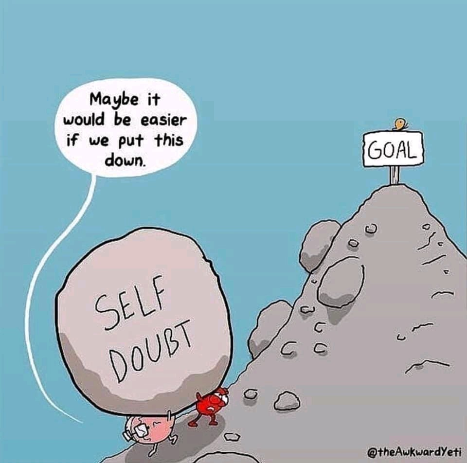

How to reduce anxiety and become more confident
Nick Harris, ICF Master Certified Coach
If you struggle with anxiety or feel that you lack confidence, you are not alone! Irrespective of the many reasons why clients get in touch with me, everyone finds themselves challenged by emotional difficulties such as anxiety and confidence at different times in their lives. They are the main reasons why people report feeling stuck and unable to find a way forward. However, it’s really hard to think your way out of your emotional challenges on your own, simply because of the way our brains are designed. You have an emotional limbic brain and a thinking cortical brain, which in evolutionary terms developed in that sequence. What this means is that your emotions will invariably override your thinking capacity. The main reason why self-help books, diets and exercise resolutions invariably fail is that they all assume that self-control is the solution, when in fact we need to work with our emotions as much as our cognitive capacity. At it's extreme, we can get hijacked by our emotions and our ability to think goes completely offline. In this state, we lose self-control and operate out of anxiety, fear and panic. An example of this is when people get caught up in road rage. Emotions are transient states which are simply signalling concerns based on past experiences. Our thinking brains are what enable us to determine appropriate responses and actions.
So given that we can’t easily think our way out of issues to do with confidence and anxiety, what can we do?
The best solution is to turn to another person. This is where coaching can be enormously helpful because it involves working with a professional who is trained to help you to step out of the place which is keeping you stuck, and support you in finding new perspectives which will enable you to move forward. Coaching is all about working with difficult emotions to bring about personal change. If you could think your way out of what’s keeping you stuck, you would have done so by now! The solutions lie within you but they are so much harder to uncover on your own. A good coach will be objective and challenging around what’s getting in the way, and equally will fully support you in identifying and taking the small steps which will enable you to move forward. You go to a doctor to be healed when you are ill and a personal trainer to improve your fitness. In the same way, you can employ a coach to help you to overcome personal obstacles in order to realise your potential and to obtain your life and work goals.Here are some suggested practices for reducing anxiety and becoming more confident, which you can try out:
- Deeply embedded habits and behaviours are really hard to change, so, first of all, be self-compassionate. Tell yourself, “I’m doing the best I can” and if things don’t work out simply ask yourself, “What can I learn and what will I do differently in the future?” Above all, avoid being self-critical – you don’t need to add a layer of shame to what you’re already finding difficult.
- Ask yourself when you are feeling anxious: "What's the worst that can happen?" Invariably, it's never as bad as you think. William Shakespeare wrote in Hamlet, “There is nothing either good or bad, but thinking makes it so.”
- Try writing down your worries and better still, schedule your worry time for two 15 minute slots per day. Whenever an uninvited worry pops into your head outside your worry time you say to yourself: “Not now, it’s not my time to worry now, I’ll get to you later.” Try not to let your worries have more attention than they deserve. You can’t get rid of all your worries but you can keep them in their place.
- Find someone you trust to explore your anxieties with so that you can step out of the perspective which is keeping you stuck and explore other possibilities. That way your anxieties are out of your head and you will be able to see them in a more detached way. If you name a fear or anxiety with another person, it will lose some of its power over you.
- Visualise what you want and imagine yourself achieving it. For example, if you feel anxious about going to a party or attending an interview, imagine yourself there and interacting confidently with the people you encounter. Practice this visual rehearsal until it becomes easy to remember how you felt so that you can call on it whenever you want to.
- Think back to an occasion in the past when you felt confident and capable, in a flow with what was taking place and enjoying yourself. Fully take in how you felt and the impact you were having. This is your true nature which you can conjure up and bring to any situation.
- Remember that any time you are doing something unfamiliar or difficult you will feel anxious, because you are stepping out of your comfort zone. That is entirely normal and it’s what we have to do to grow and develop. If we only ever stayed in our comfort zone it would shrink to the point where we would no longer be living a satisfying and meaningful life.
- Avoid comparing yourself to others and be mistrustful of the perfect lives which others portray on the social media. As with fashion models, you are seeing a selective and airbrushed version of reality! As Oscar Wilde said: "Be yourself since everyone else is already taken."